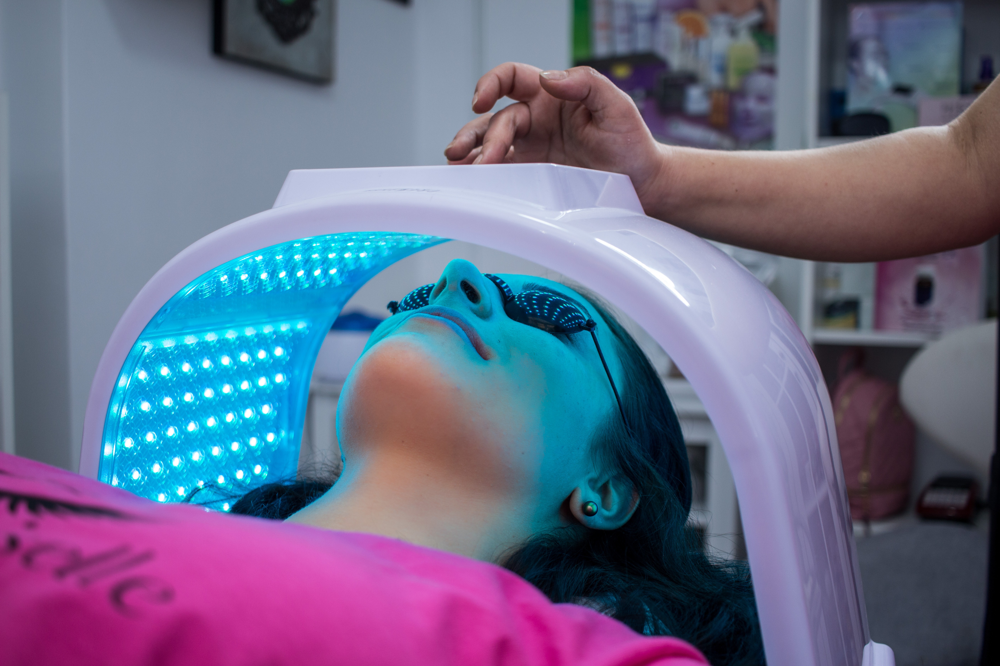

- Alergología
- Dermatología
- Medicina general
- Neurología
Alergología como especialidad médica
El alergólogo es un médico especializado en alergología y, por tanto, preparado para prevenir, diagnosticar y tratar las enfermedades alérgicas, así como educar a pacientes y familiares acerca de ellas.
¿Qué pruebas se realizan?
Para realizar el diagnóstico de certeza, el alergólogo dispone de una serie de pruebas in vivo (pruebas cutáneas y de exposición o provocación) e in vitro (analítica de laboratorio). Las pruebas cutáneas continúan siendo una de las principales herramientas diagnósticas en los procesos alérgicos; realizadas por personal cualificado y experto, son habitualmente seguras, rápidas en su realización y fiables.

El cuidado que tu piel se merece
La dermatología es la especialidad médica encargada del estudio de la estructura y función de la piel, así como de las enfermedades que le afectan, ofreciendo su prevención, diagnóstico y tratamiento.
La piel es el órgano de mayor extensión del cuerpo. Su superficie oscila entre 1,6 y 2 metros cuadrados en el adulto. Muchas enfermedades de este órgano se presentan aisladas, sin embargo, otras son exteriorizaciones de dolencias internas. El dermatólogo además de saber diagnosticar y tratar las enfermedades de la piel, posee conocimientos de cirugía y otras especialidades médicas, incluyendo reumatología, inmunología, neurología, enfermedades infecciosas y endocrinología.
Ponemos a su disposición a nuestros mejores profesionales de esta especialidad en nuestra clínica
Salud integral
La medicina general es la disciplina médica que se encarga de mantener la salud en todos los aspectos, analizando y estudiando el cuerpo humano en forma global. Constituye el primer nivel de atención médica. El médico general es un profesional capacitado para diagnosticar y manejar diferentes patologías comunes y derivar al especialista indicado cuando corresponda.
Este servicio de Clínica Puig Adam ofrece una atención de la salud integral, abierta a satisfacer cualquier problema de salud, mediante los facultativos más accesibles y cercanos al paciente ofreciéndoles un amplio horario sin cita previa.

Salud del sistema nervioso
La neurología es la especialidad médica que trata los trastornos del sistema nervioso. Específicamente se ocupa de la prevención, diagnóstico, tratamiento y rehabilitación de todas las enfermedades que involucran al sistema nervioso central, sistema nervioso periférico y el sistema nervioso autónomo. Existen gran número de enfermedades neurológicas, las cuales pueden afectar el sistema nervioso central (cerebro y espina dorsal), el sistema nervioso periférico, o el sistema nervioso autónomo.
Los especialistas de la clínica Puig Adam proporcionan servicios de prevención, diagnóstico y tratamiento de todas las patologías que afectan al sistema nervioso central, el sistema nervioso periférico y el sistema nervioso autónomo. Para la correcta detección de las diferentes patologías, utilizamos entre otras técnicas, el electromiograma.
¿Qué es el electromiograma?
El electromiograma es una prueba que se usa para estudiar el funcionamiento del sistema nervioso periférico y los músculos que inerva. Gracias a él se pueden diagnosticar con precisión enfermedades neuromusculares congénitas o adquiridas, y permite clasificarlas según su intensidad y origen.